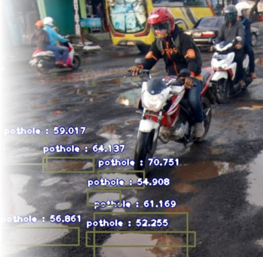
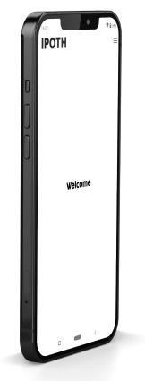
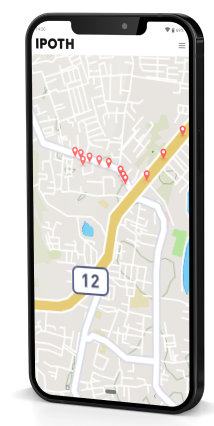
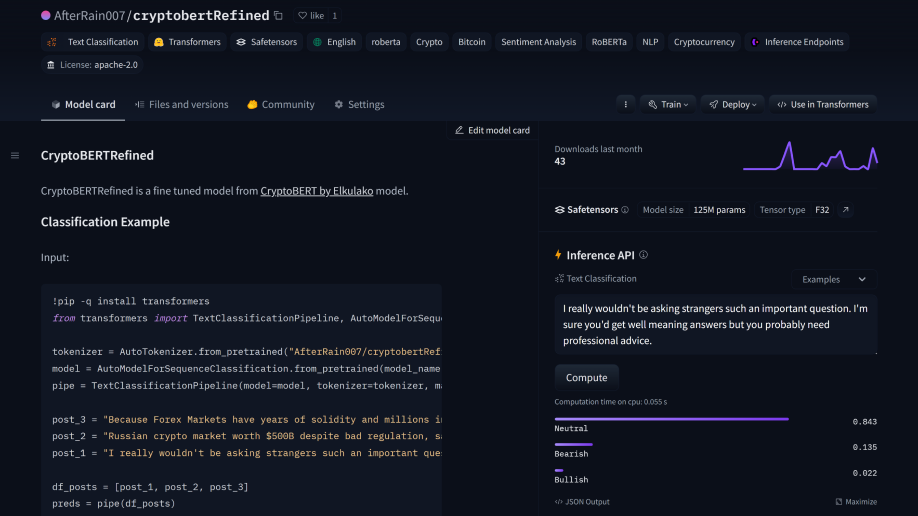

Fun Projects


Course Capstone



Pot Holes Detection with Computer Vision
Bitcoin Sentiment
Analysis with roBERTa

Bitcoin Price Prediction using Temporal Fusion Transformer


Power BI Reports

Projects